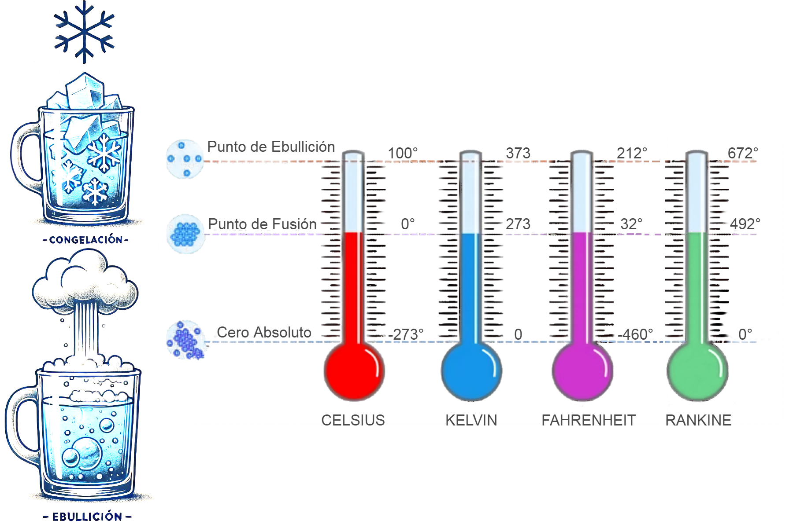

¿Qué son las escalas termométricas?
Son sistemas de medición utilizados para cuantificar la temperatura, es decir, el nivel de calor o frío de un cuerpo o sistema. Además, estas escalas asignan valores numéricos a la temperatura basándose en puntos de referencia. A continuación, se pueden observar los tipos de escalas termométricas existentes:
La escala Celsius, creada por el científico Anders Celsius, es un sistema para medir la temperatura. En esta escala, se asignan valores clave a dos puntos de referencia del agua:
• 0°C corresponde al momento en que el agua se congela (punto de fusión)
• 100°C marca el punto en que el agua hierve (punto de ebullición)
Entre estos dos puntos, la escala se divide en 100 partes iguales. Cada una de estas divisiones representa un grado Celsius.
Es interesante notar que la escala Celsius puede medir temperaturas más bajas que 0°C. De hecho, el punto más frío teóricamente posible, conocido como cero absoluto, se encuentra a -273°C en esta escala. 
La escala Fahrenheit es un sistema de medición de temperatura creado por Daniel Fahrenheit. Esta escala utiliza puntos de referencia diferentes a los de la escala Celsius:
• 32°F es la temperatura a la que el agua se congela (punto de fusión)
• 212°F es cuando el agua hierve (punto de ebullición)
Entre estos dos puntos, hay una diferencia de 180 grados. Cada uno de estos 180 espacios representa un grado Fahrenheit.
La escala Fahrenheit puede medir temperaturas muy bajas. El cero absoluto, la temperatura más fría posible, se encuentra a -460°F en esta escalada. 
La escala Kelvin, creada por el científico William Thompson, es un sistema único para medir la temperatura. A diferencia de las escalas Celsius y Fahrenheit, la escala Kelvin comienza en el punto más frío posible, conocido como cero absoluto.
• El tamaño de un grado Kelvin es igual al de un grado Celsius.
• El agua se congela a 273 K (Kelvin).
• El agua hierve a 373 K.
Es importante notar que en la escala Kelvin no se usa el símbolo de grados (°), sino simplemente la letra K. 
La escala Rankine es un sistema de medición de temperatura creado por el científico William Rankine.
• Al igual que la escala Kelvin, comienza en el cero absoluto (la temperatura más baja posible).
• Los grados Rankine tienen el mismo tamaño que los grados Fahrenheit.
En la escala Rankine:
• El agua se congela a 492°R (grados Rankine).
• El agua hierve a 672°R.
• Cada división en esta escalada representa un grado Rankine. 
A continuación, se puede observar la siguiente imagen interactiva donde se muestra la relación de las 4 escalas del agua.
